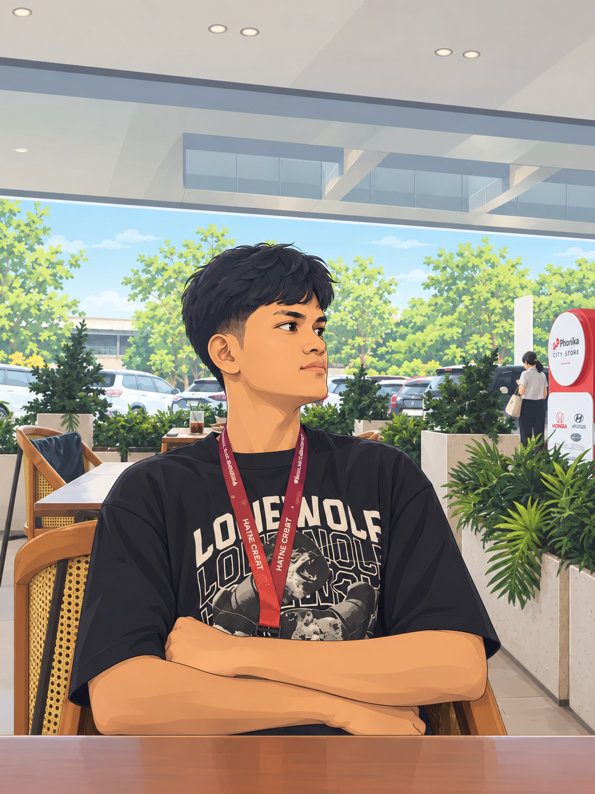

— by juliana XI RPL 1 —
Watashi no kazoku ni tsuite
Kore wa watashi no kazoku. Watashi no kazoku wa roku nin desu. Watashi to chichi to haha to ani to ane desu. Watashi wa yonin kyoudai desu. Ani futari to ane desu. Watashi wa yonbanme desu. Watashi wa ichiban shita desu. Watashi wa shuumatsu, ane to yoku souji o shimasu.
Kazoku No Kakeizu
Family Tree
Chichi / Ayah
あおい ふくの ひとは わたしの ちちです。かっこよくて、きびしいです。
Aoi fuku no hito wa watashi no chichi desu. Kakkoyokute, kibishii desu.
Haha / Ibu
みどりの ヒジャブの ひとは わたしの ははです。きれいで、やさしいです。
Midori no hijabu no hito wa watashi no haha desu. Kirei de, yasashii desu.
Ani / Kakak Laki-laki
デニムの シャツの ひとは わたしの あにです。かれは いちばんめです。ハンサムで、きびしいです。
Denimu no shatsu no hito wa watashi no ani desu. Kare wa ichibanme desu. Hansamu de, kibishii desu.
Ane / Kakak Perempuan
しろと くろの ふくの ひとは わたしの あねです。あねは にばんめです。きれいで、きびしいです。
Shiro to kuro no fuku no hito wa watashi no ane desu. Ane wa nibanme desu. Kirei de, kibishii desu.

Ani / Kakak Laki-laki
くろい ティーシャツの ひとは わたしの あにです。かれは さんばんめです。ハンサムで、しずかです。
Kuroi tii-shatsu no hito wa watashi no ani desu. Kare wa sanbanme desu. Hansamu de, shizuka desu.
Watashi / Saya
くろい ヒジャブと ふくの ひとは わたしです。わたしは よんばんめで、いちばん したです。かわいくて、あかるいです。
Kuroi hijabu to fuku no hito wa watashi desu. Watashi wa yonbanme de, ichiban shita desu. Kawaikute, akarui desu.